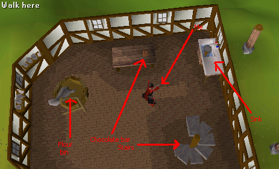
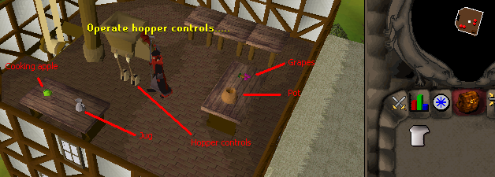

Cook's Guild
Welcome to the Cook's Guild!
Location: The guild is located near edgeville dungeon, just northwest of Juliet's house.
Requirements: To enter the Cook's Guild, you need 32 Cooking and you must be wearing a chef's hat.
If you don't have any chef's hats, they can be obtained by killing Imps or Goblins (Level 2).
First Floor:

There is a chocolate bar respawn which is great for training your herblore. There is a sink for all your watering needs and the flour bin to collect your flour from.
Second Floor:

There are two cooking apple respawns on the southern tables and also a pie dish, so this is good for making apple pies, and there is a bowl and cake tin respawn at the northern tables, finished with two ranges for all your cooking.
Third Floor:

ANOTHER cooking apple respawn next to a jug and some grapes and a pot. Also, you put your grain here to and operate the hopper controls, then collect your flour from the flour bin (first floor).
The Cook's Guild is pretty close to Varrock's West Bank so if you need to train Cooking, it's the place to be.
To reference the recipes and experience of different foods you can cook in the Cook's Guild, look in the Cooking Guide.
This Guild guide was written by Pirate Bob49. Thanks to long eared b, assassin the stealth, and DRAVAN for corrections.
This Guild guide was entered into the database on Thu, May 27, 2004, at 09:36:11 PM by Pirate Bob49 and was last updated on Tue, Sep 20, 2005, at 08:31:02 PM by DRAVAN.